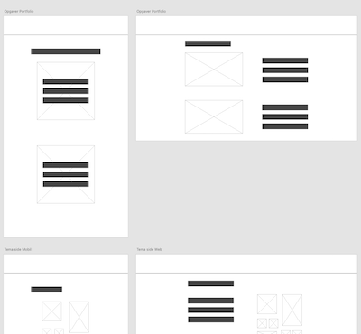
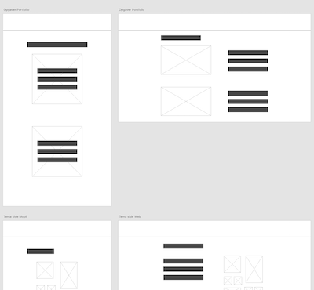

06 - Portfolio
På dette tema var mit mål at lave et portfolio website, som præsenterede vores 1 semesters opgaver. Min rolle var at vise at jeg har nået de læringsmål der er blevet opsat. Jeg har brugt flere af de værktøjer og erfaringer fra tidligere temaer. Jeg har arbejdet med moodboard, styletile, wireframe og layoutdiagram til at designe og udvikle min side. Jeg har komprimeret mine billeder og formateret mange til webP format. Samtlige tidligere erfaringer med HTML, CSS og javascript er blevet brugt til at skabe en fuldendt interaktiv oplevelse. Her har jeg brugt grid og flex til opsætning og javascript til burgermenu og light/dark mode. Min side er Lighthouse testet for at sikre optimal performance. Med så meget viden opsamlet på kort tid, var det svært at bringe det hele i spil. Med udgangspunkt i stilarterne fra tema 02, så har jeg designet mit site i minimalistisk og modern futuristic webdesign.
 

Det lærte mig
Vigtigheden i at forstå og benytte de rigtige test og værktøjer til at idé udvikle, designe, programmere og teste både før, under og efter et projekt. At huske at have brugeren og målgruppen i fokus i et design, og at det er vigtigt at udvikle en side, der er responsiv og som performer godt. Jeg har lært at benytte min læring omkring HTML, CSS og javascript til at udvikle en professionel side, som lever op til nuværende konventioner.